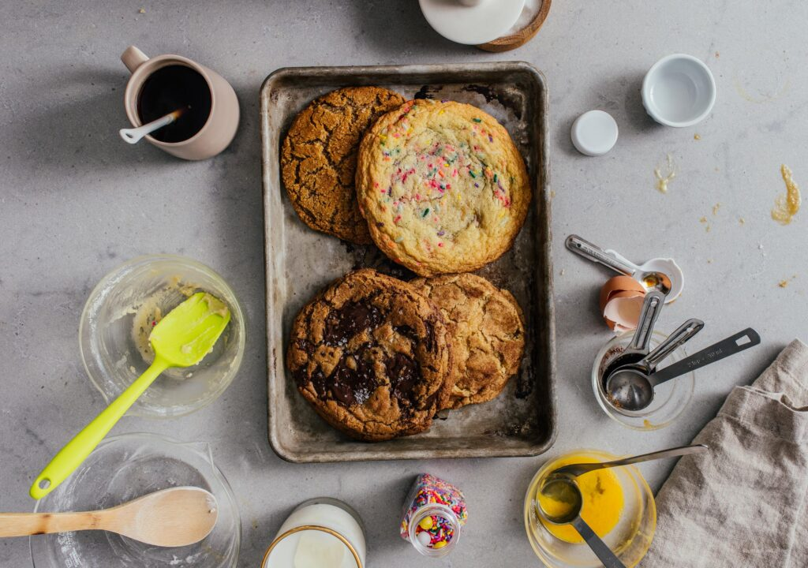

Small Batch Single Serving Giant Cookies

INGREDIENTS
- 6 tbsp all purpose flour 45 grams
- 1/8 tsp baking soda
1/8 tsp salt
2 tbsp butter melted and cooled
3 tbsp brown sugar
1 tbsp sugar
1/4 large egg
1/4 teaspoons lightly beaten egg, about 13-14 grams
1/4 tsp vanilla
1/4-1/2 cup chopped semi sweet dark chocolate about 2 ounces
INSTRUCTION
- Heat the oven to 350°F. Line a small baking sheet with parchment paper and set aside.
- In a small bowl, mix together the flour, baking soda, and salt.
- In a medium bowl, mix together the butter and sugars. Add the egg and vanilla and mix well.
- Fold in the flour mix into the butter mix until no dry spots remain. Fold in the chocolate chunks.
- Form the dough into a large ball and place on the baking sheet.
- Bake for 8 minutes, then remove from the oven and tap the tray on the counter 3-4 times to deflate. Return to the oven and continue to bake until golden brown, 3-4 minutes more. Let cool slightly before enjoying!
GO TO RECIPEES